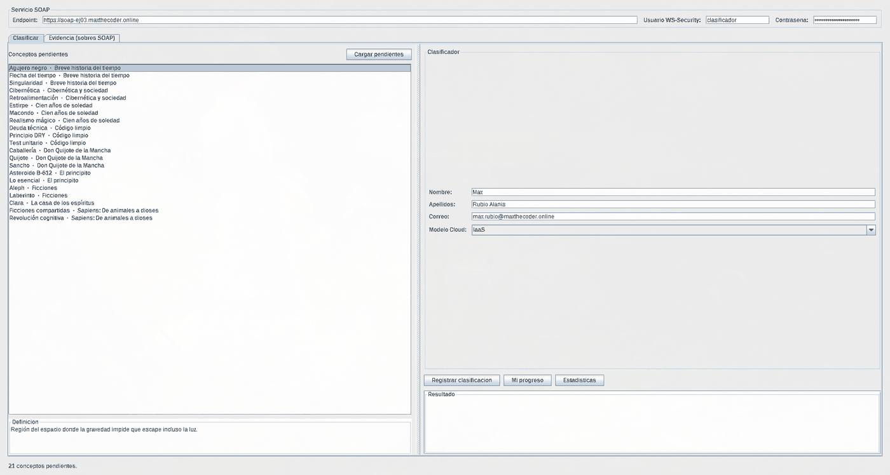
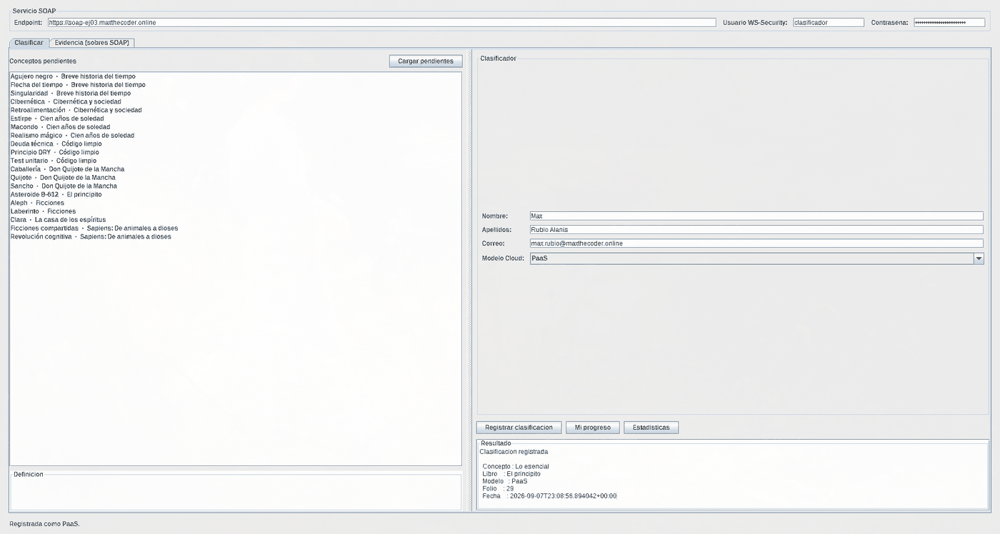
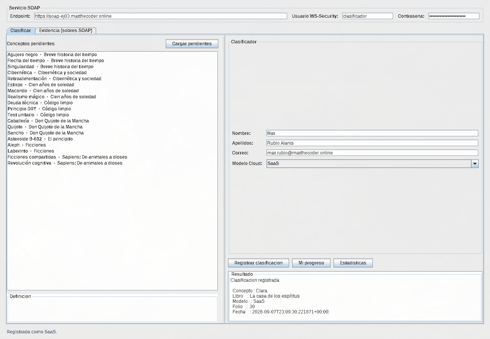
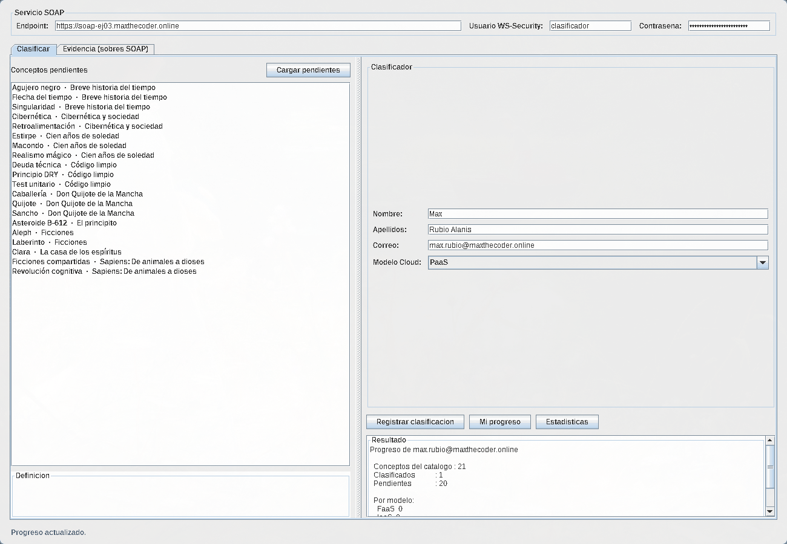
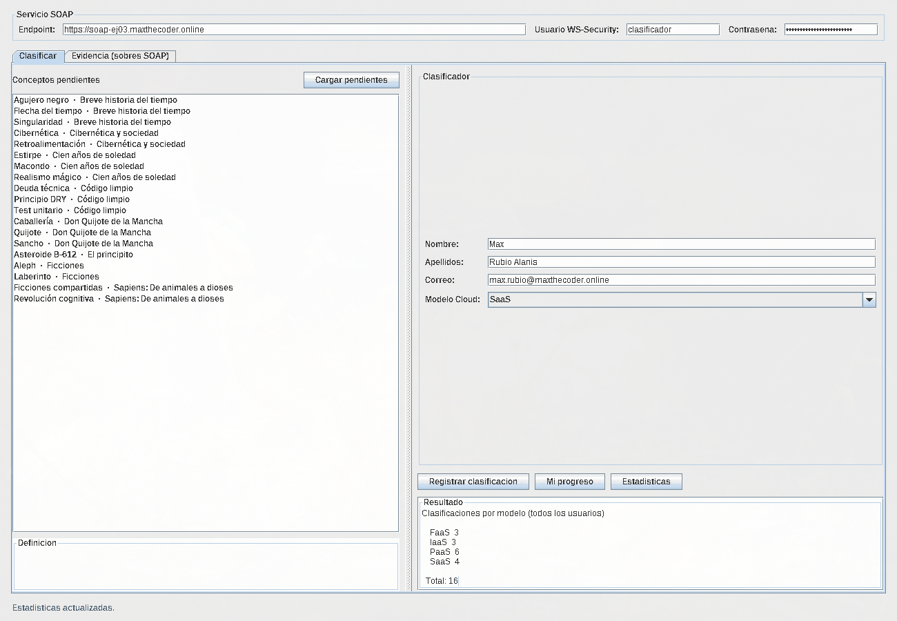
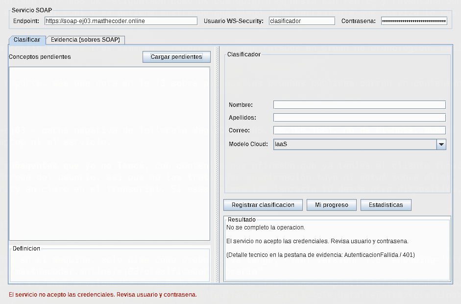

Reporte de actividad · 03
Módulo SOAP
sobre un
monolito vivo.
Un servicio SOAP independiente en Flask que clasifica los conceptos del catálogo de la librería como IaaS, PaaS, SaaS o FaaS — compartiendo la base de datos del monolito Node.js sin tocar una sola línea de su código.
- 01 · Objetivo y scope
- 02 · Arquitectura inicial y final
- 03 · El monolito y el nuevo módulo
- 04 · Diseño de datos
- 05 · Contrato WSDL y tipos XSD
- 06 · Operaciones implementadas
- 07 · Request, Response y Fault
- 08 · Seguridad y WS-Security · Tarea 1
- 09 · SOAP Fault y experiencia de usuario · Tarea 2
- 10 · Auditoría del contrato · Tarea 3
- 11 · Aplicación de escritorio
- 12 · Interoperabilidad · Tarea 4
- 13 · Plan de pruebas
- 14 · Evidencias de PostgreSQL
- 15 · Decisiones y trade-offs
- 16 · Problemas y soluciones
- 17 · Métricas · Tarea 5
- 18 · Despliegue y descargas
- 19 · Uso de IA y prompts
Objetivo y scope
Diseñar, construir, probar y documentar un módulo SOAP independiente que se integre con la aplicación monolítica de librería del Ejercicio 02 (Node.js + PostgreSQL) sin modificar su código. El módulo publica un contrato WSDL, construye los sobres SOAP a mano con xml.etree, consulta y registra información en PostgreSQL vía psycopg2, y es consumido desde una aplicación de escritorio.
Dentro del alcance: consultar conceptos pendientes del catálogo real; registrar clasificaciones Cloud (IaaS, PaaS, SaaS, FaaS); consultar el progreso de un usuario; contabilizar clientes de escritorio atendidos; detectar clasificaciones duplicadas y responder con SOAP Fault; mantener el monolito funcionando sin cambios.
Fuera del alcance: migrar el monolito, crear una API REST, reemplazar PostgreSQL, modificar el esquema funcional existente, o usar Spyne/Zeep del lado servidor para ocultar la construcción del Envelope.
books, concepts, book_concepts y categories. La base real del Ejercicio 02 está en español —libros, conceptos, categorias— y no tiene tabla puente: conceptos cuelga directo de libros vía conceptos.libro_id. Se trabajó contra el esquema que existe, sin renombrar nada y sin inventar una capa de traducción que solo habría añadido una fuente de errores. Todo el módulo usa la nomenclatura real.
Arquitectura inicial y final
La arquitectura inicial era un monolito clásico: navegador → Express → PostgreSQL, todo en un proceso. La final añade un segundo propietario de la misma base de datos, con su propia frontera, su propio contrato y su propio usuario de PostgreSQL.
El flujo lógico que pide el enunciado se lee de izquierda a derecha: aplicación de escritorio → cliente SOAP → HTTP POST/XML → módulo SOAP Flask → psycopg2 → PostgreSQL. La línea inferior muestra que el monolito Node.js sigue accediendo a PostgreSQL por su cuenta, con su propio usuario, sin enterarse de que el módulo existe.
El monolito y el nuevo módulo
El monolito del Ejercicio 02 corre en el Raspberry Pi como dos contenedores (libreria-app-1 y libreria-db-1) levantados desde su propio docker-compose.yml. Sirve el catálogo, la autenticación, el carrito y el panel de administración.
El módulo SOAP es un tercer contenedor, con su propio compose, su propia imagen y su propio ciclo de vida. Se conecta a dos redes Docker: la del monolito, para alcanzar PostgreSQL, y la red services, donde vive el túnel de Cloudflare que lo publica.
| Aspecto | Monolito (Ej. 02) | Módulo SOAP (Ej. 03) |
|---|---|---|
| Lenguaje | Node.js · Express · EJS | Python 3.12 · Flask |
| Protocolo | HTML sobre HTTP | SOAP 1.1 sobre HTTPS |
| Contrato | Implícito (las vistas) | Explícito (WSDL + XSD) |
| Usuario de BD | libreria — dueño | soap_svc — mínimo privilegio |
| Esquema propio | public | soap |
| Acceso al otro | ninguno | 3 tablas de public, solo lectura |
| Despliegue | ~/libreria/docker-compose.yml | deploy-iac/ejercicio-03/ |
Se verificó al terminar que ~/libreria no tiene un solo archivo modificado y que information_schema sigue listando exactamente las diez tablas originales en public.
Diseño de datos y tablas propias
Todo lo nuevo vive en un esquema soap separado dentro de la misma base. No hay un solo ALTER, ni una tabla nueva en public. La ventaja práctica es que la frontera se vuelve explícita y el permiso de mínimo privilegio se audita de un vistazo.
| Tabla | Para qué | Restricciones que importan |
|---|---|---|
soap.clasificadores |
Identidad propia de quien clasifica. | UNIQUE(email) · CHECK de formato de correo. No reutiliza public.usuarios, como exige el enunciado. |
soap.clasificaciones_cloud |
El registro de negocio: qué concepto se clasificó como qué. | UNIQUE(clasificador_id, concepto_id) — es lo que dispara el Fault 409. CHECK del enum de modelos. FK a public.conceptos con ON DELETE CASCADE. |
soap.clientes_servidos |
Contabilidad de peticiones por tipo de cliente. | UNIQUE(tipo_cliente, identificador) · CHECK(peticiones_atendidas >= 0). |
soap.usuarios_wsse |
Credenciales de WS-Security. | Solo el hash PBKDF2. Nunca la contraseña. |
soap.nonces_wsse |
Anti-replay: nonces ya consumidos. | PRIMARY KEY(nonce) — el conflicto es la detección del replay. |
La lógica no vive en Python sino en funciones de PostgreSQL. soap.sp_registrar_clasificacion() toca tres tablas en una sola unidad transaccional del lado del servidor de base de datos: da de alta o actualiza al clasificador, inserta la clasificación e incrementa el contador del cliente. Si cualquiera falla, no queda nada a medias.
La vista soap.v_conceptos_catalogo es la frontera de lectura: hace el join de conceptos + libros + categorias y expone solo seis columnas. precio, stock, portada, editorial_id y orden nunca salen de la base.
Mínimo privilegio, ejecutable
El rol soap_svc es NOSUPERUSER NOCREATEDB NOCREATEROLE NOINHERIT, y sus permisos son literalmente los del archivo 03_minimo_privilegio.sql:
| Objeto | Permiso | Por qué |
|---|---|---|
public.libros, conceptos, categorias | SELECT | Es lo que el contrato necesita mostrar. |
public.usuarios, pedidos, detalle_pedido, sesiones, autores, editoriales, libro_autor | ninguno | El módulo no tiene por qué verlas. Revocado explícitamente. |
soap.clasificadores, clasificaciones_cloud, clientes_servidos | SELECT, INSERT, UPDATE | Sus propios datos. |
las mismas, DELETE | revocado | El historial de clasificaciones es evidencia; no se borra desde la aplicación. |
soap.usuarios_wsse | SELECT + UPDATE(ultimo_acceso) | Verifica credenciales; nunca las crea ni las cambia. |
Contrato WSDL y tipos XSD
El contrato se escribió antes que la implementación: el servicio Flask existe para cumplirlo, no al revés. Es WSDL 1.1, SOAP 1.1, estilo document/literal — se descartó rpc/encoded porque el WS-I Basic Profile lo desaconseja y varios stacks modernos ya no lo generan.
Los tipos viven en un XSD propio (clasificador-libreria.xsd) que se sirve embebido dentro de <wsdl:types>. Así un generador de clientes obtiene el contrato completo en una sola descarga, sin depender de resolver un schemaLocation relativo — un detalle que ahorra problemas reales con wsimport y dotnet-svcutil.
La validación empieza en el contrato, no en el código. ModeloCloud es un xsd:simpleType con enumeration de los cuatro valores; Correo lleva un pattern; Limite acota entre 1 y 200. Un cliente que mande "XaaS" está violando el contrato antes de que el servidor opine.
<xsd:simpleType name="ModeloCloud">
<xsd:restriction base="xsd:string">
<xsd:enumeration value="IaaS"/>
<xsd:enumeration value="PaaS"/>
<xsd:enumeration value="SaaS"/>
<xsd:enumeration value="FaaS"/>
</xsd:restriction>
</xsd:simpleType>Operaciones implementadas
| Operación | Entrada | Salida | Origen |
|---|---|---|---|
ObtenerConceptosPendientes |
correo?, limite?, tipoCliente? |
Lista de conceptos con término, definición, libro, ISBN y categoría | Ejercicio guiado |
RegistrarClasificacion |
clasificador{nombre, apellidos, correo}, conceptoId, modelo, tipoCliente? |
Folio, estado, término, libro, modelo y fecha | Ejercicio guiado |
ObtenerProgresoUsuario |
correo, tipoCliente? |
Total, clasificados, pendientes y desglose por modelo | Ejercicio guiado |
ObtenerEstadisticasPorModelo |
tipoCliente? |
Conteo global por IaaS/PaaS/SaaS/FaaS y total general | Tarea 1 |
«Pendiente» es relativo al clasificador: son los conceptos que ese correo todavía no ha clasificado. Sin correo, la operación devuelve el catálogo completo. Esa decisión evita que dos personas se estorben trabajando en paralelo.
La operación se resuelve por el QName del primer hijo del Body, no por la cabecera SOAPAction. SOAPAction es una pista de enrutamiento que el cliente controla y que algunos stacks omiten; el cuerpo es el contrato. Además se verifica que el elemento pertenezca al namespace correcto, para que un RegistrarClasificacion de otro namespace no se confunda con el nuestro.
Request, Response y Fault
Los tres sobres son capturas reales del plan de pruebas. La contraseña aparece censurada por la propia herramienta de pruebas, que la sustituye antes de escribir la evidencia.
SOAP Request — RegistrarClasificacion
<soap:Envelope xmlns:soap="http://schemas.xmlsoap.org/soap/envelope/"
xmlns:cls="http://maxthecoder.online/ej03/clasificador-libreria">
<soap:Header>
<wsse:Security xmlns:wsse="...oasis-200401-wss-wssecurity-secext-1.0.xsd"
xmlns:wsu="...oasis-200401-wss-wssecurity-utility-1.0.xsd">
<wsse:UsernameToken>
<wsse:Username>clasificador</wsse:Username>
<wsse:Password Type="...#PasswordText">********</wsse:Password>
<wsse:Nonce>fDdqtGf9xxgQraKNe8KsdA==</wsse:Nonce>
<wsu:Created>2026-09-07T21:43:23Z</wsu:Created>
</wsse:UsernameToken>
</wsse:Security>
</soap:Header>
<soap:Body>
<cls:RegistrarClasificacion>
<cls:clasificador>
<cls:nombre>Max</cls:nombre>
<cls:apellidos>Rubio Alanis</cls:apellidos>
<cls:correo>pruebas.plan@maxthecoder.online</cls:correo>
</cls:clasificador>
<cls:conceptoId>12</cls:conceptoId>
<cls:modelo>IaaS</cls:modelo>
<cls:tipoCliente>curl</cls:tipoCliente>
</cls:RegistrarClasificacion>
</soap:Body>
</soap:Envelope>SOAP Response
<soap:Envelope ...><soap:Body>
<cls:RegistrarClasificacionResponse>
<cls:clasificacionId>10</cls:clasificacionId>
<cls:estado>REGISTRADA</cls:estado>
<cls:termino>Agujero negro</cls:termino>
<cls:tituloLibro>Breve historia del tiempo</cls:tituloLibro>
<cls:modelo>IaaS</cls:modelo>
<cls:registradaEn>2026-09-07T21:43:23.666928+00:00</cls:registradaEn>
</cls:RegistrarClasificacionResponse>
</soap:Body></soap:Envelope>SOAP Fault — clasificación duplicada (409)
<soap:Envelope ...><soap:Body>
<soap:Fault>
<faultcode>soap:Client</faultcode>
<faultstring>Este clasificador ya registro una clasificacion para ese concepto.</faultstring>
<faultactor>clasificador-libreria</faultactor>
<detail>
<cls:DetalleFalla>
<cls:tipo>ClasificacionDuplicada</cls:tipo>
<cls:codigo>409</cls:codigo>
<cls:mensaje>Este clasificador ya registro una clasificacion para ese concepto.</cls:mensaje>
</cls:DetalleFalla>
</detail>
</soap:Fault>
</soap:Body></soap:Envelope>wsimport, zeep y .NET: si se devolviera 409, varios stacks ni siquiera leerían el cuerpo y el cliente perdería el Fault tipado. El código semántico viaja dentro de <detail>, que es donde el contrato dice que está.
Tarea 1 · Estadísticas por modelo + WS-Security
Seguridad y WS-Security
Se protegieron las cuatro operaciones con wsse:UsernameToken, no solo la sensible. El contrato (/wsdl, /xsd) sí queda público: tiene que serlo para ser interoperable y para que el profesor pueda inspeccionarlo. Lo que se protege son las operaciones, no su descripción.
PasswordText sobre TLS, no PasswordDigest
- Necesidad
- Autenticar al cliente sin almacenar contraseñas en texto plano, como exige el enunciado.
- Decisión
- Perfil
PasswordTextsobre HTTPS, conNoncede un solo uso y ventana de validez sobrewsu:Created. En la base solo vive un PBKDF2-HMAC-SHA256 con 260 000 iteraciones y sal por usuario. - Justificación
PasswordDigestparece más seguro porque la contraseña no viaja en claro, pero obliga al servidor a recomputarSHA1(nonce + created + password)— es decir, a conservar la contraseña de forma recuperable. Eso es exactamente lo que el enunciado prohíbe, con un paso extra. Además SHA1 sin iteraciones es un mal derivador de claves en 2026.- Ventajas
- Solo se almacena un hash lento. El anti-replay es real y verificable (prueba N07b). El mecanismo es estándar:
zeeplo habla sin adaptadores. - Limitaciones
- Sin TLS,
PasswordTextexpone la credencial. El servicio está pensado para vivir detrás del túnel de Cloudflare y nunca en HTTP plano. El servidor rechaza explícitamentePasswordDigestcon un mensaje que explica por qué, para que no se confunda con una carencia.
La verificación del hash usa hmac.compare_digest(): comparar con == filtra información por el tiempo de respuesta. Y cuando el usuario no existe, se verifica igual contra un hash ficticio, para que el tiempo no delate qué usuarios están dados de alta.
La operación de la Tarea 1, ObtenerEstadisticasPorModelo, se agregó sin romper las tres anteriores: mismo portType, mismo binding, mismo endpoint, mismos mensajes. Un cliente compilado contra la versión previa del contrato sigue funcionando sin recompilar — que es la definición práctica de extender en vez de romper.
| Prueba de seguridad | Resultado | Estado |
|---|---|---|
| Credenciales correctas | Operación atendida | Correcto |
| Contraseña incorrecta | AutenticacionFallida (401) | Correcto |
Sin UsernameToken | AutenticacionFallida (401) | Correcto |
| Reenviar un sobre válido tal cual | Rechazado por nonce repetido | Correcto |
Created de hace dos horas | Rechazado por ventana vencida | Correcto |
El mensaje de credenciales inválidas es deliberadamente vago: no distingue «usuario inexistente» de «contraseña incorrecta», para no regalar información a quien enumere usuarios.
Tarea 2 · SOAP Fault y experiencia de usuario
Errores: qué ve el usuario y qué queda en el log
Cada falla tiene dos caras. Al cliente le llega un faultcode, un mensaje legible y un <detail> con tipo estable y codigo numérico. Al log del servidor le llega el detalle técnico: SQLSTATE, excepción original y stack. El detalle técnico nunca cruza la frontera del servicio.
| Caso | faultcode | tipo / código | Lo que ve el usuario en la GUI |
|---|---|---|---|
| Clasificación duplicada | soap:Client | ClasificacionDuplicada / 409 | «Ya clasificaste ese concepto antes. Elige otro de la lista de pendientes.» |
| Concepto inexistente | soap:Client | ConceptoInexistente / 404 | «Ese concepto ya no está en el catálogo. Vuelve a cargar los pendientes.» |
| Modelo inválido | soap:Client | ModeloInvalido / 422 | «Selecciona uno de los cuatro modelos: IaaS, PaaS, SaaS o FaaS.» |
| XML inválido | soap:Client | XmlInvalido / 400 | «El servicio no pudo leer la petición. Reporta este caso si se repite.» |
| Credenciales malas | soap:Client | AutenticacionFallida / 401 | «El servicio no aceptó las credenciales. Revisa usuario y contraseña.» |
| Falla de PostgreSQL | soap:Server | ErrorInterno / 500 | «El servicio tuvo un problema interno. Intenta de nuevo en un momento.» |
La GUI decide sobre el campo tipo, nunca sobre el texto del mensaje. El texto está escrito para una persona y puede cambiar; el tipo es parte del contrato. Esa es la razón por la que el <detail> está tipado en el XSD y no es texto libre.
La distinción entre soap:Client y soap:Server tampoco es decorativa: el cliente Java muestra un diálogo de advertencia y deja el formulario editable cuando la culpa es del cliente, y un diálogo de error cuando el problema es del servidor. La acción que se espera de la persona es distinta en cada caso — corregir algo, o volver a intentar más tarde.
Nunca se filtra stack trace, ruta interna, consulta SQL ni contraseña. Se comprobó revisando los sobres de las diez pruebas negativas: ninguna respuesta contiene la palabra psycopg2, un SQLSTATE ni una ruta del contenedor.
Tarea 3 · Auditoría del contrato WSDL
El contrato como superficie pública
La regla de ingeniería que gobierna el XSD: el contrato expone capacidades y los datos necesarios para ejercerlas, no la estructura de la base de datos. Esta es la auditoría dato por dato.
| Dato | Operación | ¿Se expone? | Justificación |
|---|---|---|---|
conceptos.termino, definicion | ObtenerConceptosPendientes | Sí | Es lo que el usuario está clasificando; sin esto la operación no sirve. |
libros.titulo, isbn | ObtenerConceptosPendientes | Sí | Contexto para desambiguar términos que se repiten entre libros. |
categorias.nombre | ObtenerConceptosPendientes | Sí | Ayuda a decidir; es un dato ya público en el catálogo web. |
libros.precio, stock | — | No | Datos comerciales del monolito. Irrelevantes para clasificar. |
libros.portada, descripcion, editorial_id | — | No | Ruido. Cada columna expuesta es una columna que después no se puede quitar sin romper clientes. |
conceptos.orden | — | No | Detalle de presentación interno del monolito. |
public.usuarios (todo) | — | No | Datos personales de otro sistema. El rol de BD ni siquiera puede leerlos. |
| Credenciales de BD | — | No | Información sensible interna. |
clasificaciones_cloud.clasificacion_id | RegistrarClasificacion | Sí | Folio que el usuario puede citar; es un identificador opaco, no revela volumen de negocio. |
| Conteos agregados por modelo | ObtenerEstadisticasPorModelo | Sí, autenticado | Agregado, sin identificar a nadie. Aun así se protege: revela actividad del sistema. |
Tres riesgos identificados y su mitigación
- 1
El WSDL revela el modelo de negocio. Un atacante que lea el contrato sabe que existen clasificadores identificados por correo, que hay una restricción de unicidad y que el catálogo tiene conceptos con ISBN. Mitigación: el contrato no expone conteos, ni rangos de identificadores, ni nombres de tablas o columnas reales —
conceptoIdno diceconceptos.concepto_id. La información que queda es la mínima para consumir el servicio. - 2
La identidad del clasificador la declara el cliente. El correo llega en el cuerpo del mensaje; quien autentica es el
UsernameTokendel Header. Es decir: un usuario autenticado puede registrar clasificaciones a nombre de cualquier correo. Mitigación parcial: queda auditado (todas las peticiones pasan por una credencial verificada y se registra elultimo_acceso). Mitigación real pendiente: ligarusuarios_wsseconclasificadoresy rechazar correos que no correspondan a la credencial. Se documenta como deuda consciente, no como descuido. - 3
Acoplamiento por la clave foránea al monolito.
clasificaciones_cloud.concepto_idreferenciapublic.conceptos. Si el monolito renombra esa tabla o su clave, el módulo se rompe. Mitigación: se guardanisbnyterminodesnormalizados en cada clasificación, como copia de auditoría que sobrevive al cambio; y elON DELETE CASCADEpreserva intacto el borrado en cascada que el monolito ya tenía.
Conclusión sobre contrato estricto y mantenibilidad. Un contrato estricto cuesta más de escribir y paga después. Los tipos con enumeration y pattern convirtieron tres clases de error en rechazos del contrato antes de tocar la base. Y lo que no se expuso es lo que permite refactorizar por dentro: mientras ConceptoPendiente siga teniendo esos seis campos, la vista, las tablas y hasta el motor de base de datos pueden cambiar sin avisar a nadie.
La aplicación de escritorio como cliente SOAP
El cliente es una aplicación Java Swing, continuación del clasificador Cloud del Ejercicio 01. La diferencia de fondo: en el Ejercicio 01 la clasificación se calculaba en local con expresiones regulares; ahora se registra en el servidor y el escritorio es solo el cliente de un contrato.
Se entrega como JAR ejecutable. En la laptop basta con:
curl -O https://soap-ej03.maxthecoder.online/descargas/cliente-ej03.jar
java -jar cliente-ej03.jarSin dependencias externas y con el endpoint público ya compilado dentro, así que funciona recién descargado. El JAR se compila dentro de un contenedor eclipse-temurin: el Raspberry Pi no tiene JDK y no se le instaló uno.
La separación es deliberada: ClienteSoap no importa una sola clase de Swing, así que el modo consola y la ventana ejercitan exactamente el mismo código de protocolo.
La GUI no conoce PostgreSQL. No hay driver JDBC, ni cadena de conexión, ni un nombre de tabla en todo el proyecto del cliente. Lo único que sabe del servidor es el contrato. Si mañana el módulo cambiara de motor de base de datos, este código no se entera.
El sobre se construye con createElementNS() y setTextContent(), nunca concatenando cadenas: el escapado de & y < lo hace el Transformer. Un apellido con un ampersand viaja correctamente en lugar de romper el XML — y nadie puede inyectar marcado desde un campo del formulario. El mismo cuidado está del lado del servidor.
La ventana tiene una pestaña Evidencia que muestra el sobre exacto enviado y el recibido, incluidos los Fault. Sirve para el reporte sin necesidad de un proxy ni un capturador de tráfico; la contraseña aparece censurada.
Evidencia en pantalla
Seis capturas del flujo completo contra el servicio público: cargar pendientes, registrar clasificaciones, consultar progreso, la vista de estadísticas y el manejo de una credencial inválida.

ObtenerConceptosPendientes.


ObtenerProgresoUsuario.
ObtenerEstadisticasPorModelo, la estadística de la Tarea 1.
Tarea 4 · Interoperabilidad
Un segundo cliente, otro lenguaje, cero conocimiento previo
Se generó un cliente con zeep (Python) a partir del WSDL publicado. Corre en su propia imagen Docker, sin compartir nada con el servicio: ni código, ni dependencias, ni versiones.
cliente = Client("https://soap-ej03.maxthecoder.online/wsdl", wsse=token)
respuesta = cliente.service.ObtenerConceptosPendientes(correo=..., limite=5)
registro = cliente.service.RegistrarClasificacion(
clasificador={"nombre": "Max", "apellidos": "Rubio Alanis", "correo": ...},
conceptoId=elegido.conceptoId, modelo="PaaS", tipoCliente="python-zeep")Nadie le describió los mensajes a zeep: descubrió las cuatro operaciones, sus tipos y el binding leyendo el contrato. Y convirtió el soap:Fault del duplicado en una excepción de Python con el detail tipado, también derivado del XSD. Si el contrato estuviera mal formado, esto habría fallado antes de enviar el primer byte — que es exactamente lo que lo convierte en una prueba y no en una demostración.
El hallazgo interesante
zeep no emite Nonce ni Created cuando se usa el perfil PasswordText; solo lo hace con PasswordDigest. Nuestro servicio los exige, porque el anti-replay lo dan esos dos campos y no el digest. Hubo que añadir una subclase de doce líneas.
La causa de fondo es que la política de seguridad no viaja en el WSDL 1.1. El contrato describe operaciones, tipos y binding, pero no dice «hace falta un Nonce». Un cliente generado descubre solo la forma de los mensajes; para autenticarse necesita documentación fuera de banda. Es justo el hueco que WS-Policy vino a llenar después, y el límite honesto de lo que un WSDL puede prometer: basta para consumir el servicio, no basta para autenticarse contra él.
| Java Swing (manual) | Python zeep (generado) | |
|---|---|---|
| Líneas para hablar el protocolo | ~330 | 1 — Client(wsdl) |
| Cómo conoce los tipos | Porque el programador los escribió | Los descubrió del XSD |
| Si cambia el contrato | Hay que editar y recompilar | Se entera al releer el WSDL |
| Control sobre el sobre | Total | El que zeep permita |
| Manejo del Fault | Se interpreta a mano el detail | Excepción tipada automática |
| Valor didáctico | Se ve el sobre completo | El sobre queda oculto |
El cliente manual enseña el protocolo; el generado es el que se usaría en producción. Que ambos hablen con el mismo servicio sin que el servicio sepa cuál es cuál es, precisamente, la definición de interoperable.
Plan de pruebas y resultados
18 casos automatizados en scripts/pruebas.py, ejecutables con un comando. Cada uno guarda su solicitud y su respuesta en evidencias/, con la contraseña censurada antes de escribir el archivo.
| ID | Prueba | Resultado esperado | Obtenido | Estado |
|---|---|---|---|---|
| P01 | Obtener conceptos pendientes | Lista válida del catálogo real | 5 conceptos | Pasa |
| P02 | Registrar IaaS / PaaS / SaaS / FaaS | 4 registros exitosos | Folios 10–13 | Pasa |
| P03 | Consultar progreso del usuario | Totales coherentes con P02 | 4 de 21 | Pasa |
| P04 | Estadísticas por modelo (Tarea 1) | Conteo por los cuatro modelos | 1 de cada uno | Pasa |
| N01 | Repetir la misma clasificación | SOAP Fault 409 | ClasificacionDuplicada | Pasa |
| N02 | Concepto inexistente | SOAP Fault de cliente | ConceptoInexistente | Pasa |
| N03 | Modelo XaaS | SOAP Fault de validación | ModeloInvalido | Pasa |
| N04 | XML malformado | Fault de cliente, sin ejecutar SQL | XmlInvalido | Pasa |
| N05 | Contraseña incorrecta | Fault de autenticación | AutenticacionFallida | Pasa |
| N06 | Sin UsernameToken | Fault de autenticación | AutenticacionFallida | Pasa |
| N07 | Reenviar un sobre válido tal cual | Rechazo por nonce repetido | AutenticacionFallida | Pasa |
| N08 | Created de hace dos horas | Rechazo por ventana vencida | AutenticacionFallida | Pasa |
| N09 | Operación fuera del contrato | Fault de cliente | OperacionDesconocida | Pasa |
| N10 | Sobre con DOCTYPE (billion laughs) | Rechazo antes de parsear | XmlInvalido | Pasa |
La prueba N04 merece una nota. El enunciado pide que ante un XML inválido «no se ejecute SQL». Que eso sea cierto no se afirma: se comprueba en los tiempos de respuesta. Los casos que llegan a la base tardan ~80 ms; N04, N09 y N10 responden en ~3 ms, porque el despachador valida la forma del sobre antes de abrir la transacción. El orden del código —parsear, autenticar, validar, y solo entonces consultar— es lo que hace verdadera esa promesa.
Los mismos 18 casos, pero por internet
Pasar en localhost no demuestra que el servicio funcione. La suite se ejecuta también contra https://soap-ej03.maxthecoder.online, recorriendo la cadena completa: DNS → Cloudflare → túnel → contenedor → PostgreSQL.
$ ./scripts/run-tests.sh --publico
Plan de pruebas contra https://soap-ej03.maxthecoder.online
...
Los 18 casos pasaronEsa corrida sale desde un contenedor con un resolver público, no desde el Raspberry Pi. No es un rodeo gratuito: el Pi resuelve por Tailscale MagicDNS, que cachea respuestas negativas y seguía devolviendo NXDOMAIN del hostname recién creado mucho después de que el resto del mundo ya lo viera. Probar desde fuera elimina esa variable y, de paso, mide lo que de verdad importa —el camino que recorre una laptop cualquiera— en lugar de un atajo por la red interna del propio servidor.
403 a todas las peticiones. El sobre era idéntico al que funcionaba en local; lo que cambiaba era el User-Agent: Python-urllib/3.12, el valor por defecto de la biblioteca estándar, es una firma de bot conocida y el modo anti-bot de Cloudflare la bloquea antes de que llegue al túnel. Con un User-Agent de producto pasa. No es un truco para esquivar un filtro: identificarse es lo que hace cualquier cliente serio —zeep manda Zeep/4.3.1, el cliente Java manda Java-http-client/21— y ninguno de los dos fue bloqueado. El que estaba mal era el default de urllib.
Y el arnés de pruebas también salió tocado del incidente, con dos defectos propios: informaba HTTP 403 OK —etiquetaba como «OK» cualquier respuesta sin Fault, aunque fuera un rechazo— y reventaba con un ParseError crudo al recibir HTML en vez de XML. Un arnés que miente sobre lo que observó es peor que no tenerlo, así que ahora reporta el estado tal cual y, si la primera operación no devuelve un sobre SOAP, se detiene mostrando el principio de la respuesta.
Evidencias de PostgreSQL
Verificación directa en la base, no a través del servicio.
$ docker exec libreria-db-1 psql -U libreria -d libreria \
-c "select clasificacion_id, termino, modelo, origen_cliente, isbn
from soap.clasificaciones_cloud order by 1;"
clasificacion_id | termino | modelo | origen_cliente | isbn
------------------+-------------------+--------+----------------+----------------
10 | Agujero negro | IaaS | curl | 978-6077473662
11 | Flecha del tiempo | PaaS | curl | 978-6077473662
12 | Singularidad | SaaS | curl | 978-6077473662
13 | Cibernética | FaaS | curl | 978-8437507149
15 | Agujero negro | PaaS | python-zeep | 978-6077473662
17 | Retroalimentación | IaaS | curl | 978-8437507149
18 | Estirpe | PaaS | curl | 978-0307474728
19 | Macondo | SaaS | curl | 978-0307474728
20 | Realismo mágico | FaaS | curl | 978-0307474728
22 | Deuda técnica | IaaS | curl | 978-8441532109
23 | Principio DRY | PaaS | curl | 978-8441532109
24 | Test unitario | SaaS | curl | 978-8441532109
25 | Caballería | FaaS | curl | 978-8420412146
27 | Flecha del tiempo | PaaS | python-zeep | 978-6077473662
29 | Lo esencial | PaaS | java-swing | 978-8478887213
30 | Clara | SaaS | java-swing | 978-8401321359
(16 rows)
$ ... -c "select tipo_cliente, identificador, peticiones_atendidas
from soap.clientes_servidos;"
tipo_cliente | identificador | peticiones_atendidas
--------------+---------------------------------+----------------------
curl | pruebas.plan@maxthecoder.online | 18
curl | clasificador | 3
java-swing | max.rubio@maxthecoder.online | 12
java-swing | clasificador | 5
otro | clasificador | 6
python-zeep | interop.zeep@maxthecoder.online | 4clientes_servidos distingue correctamente los tres tipos de cliente que consumieron el servicio: el arnés de pruebas (curl), la aplicación de escritorio (java-swing) y el cliente generado desde el WSDL (python-zeep). Las clasificaciones 15 y 27 las registró el cliente interoperable — otra imagen, otro lenguaje, sin conocer la implementación; la 27 llegó además por el endpoint público, resolviendo la dirección desde el propio WSDL descargado.
Los folios 29 y 30 son la prueba que cierra el criterio «las aplicaciones de escritorio consumen el servicio SOAP»: los registró la ventana Swing desde una laptop Linux, a través de internet y el túnel de Cloudflare, en una sesión real de clasificación (capturas en la sección 11). La fila java-swing · max.rubio@maxthecoder.online · 12 cuenta esas peticiones; la fila java-swing · clasificador · 5 son las verificaciones en modo consola del mismo binario.
Los huecos en la numeración (14, 16, 21, 26, 28) no son un error: son las transacciones que se revirtieron. Cada intento de clasificación duplicada —la prueba N01, la repetición del cliente zeep, el 409 provocado a mano desde la ventana— consume un valor de la secuencia antes de que el UNIQUE lo rechace y el ROLLBACK deshaga la inserción. Que la secuencia no retroceda es el comportamiento correcto de PostgreSQL —las secuencias son deliberadamente no transaccionales para no serializar a los escritores— y aquí sirve de evidencia adicional: el rollback ocurrió de verdad.
La evidencia del mínimo privilegio es lo que falla
Un permiso que funciona no demuestra nada; lo que demuestra el mínimo privilegio es lo que el rol no puede hacer:
$ psql -U soap_svc -d libreria -c "select * from usuarios;"
ERROR: permission denied for table usuarios
$ psql -U soap_svc -d libreria -c "update conceptos set termino='alterado' ..."
ERROR: permission denied for table conceptos
$ psql -U soap_svc -d libreria -c "delete from soap.clasificaciones_cloud;"
ERROR: permission denied for table clasificaciones_cloud
$ psql -U soap_svc -d libreria -c "select count(*) from public.conceptos;"
conceptos_visibles
--------------------
21El último es el contraste: el rol sí puede leer el catálogo, que es su trabajo. No puede leer usuarios, no puede escribir en el monolito, y ni siquiera puede borrar sus propios registros de negocio — el historial de clasificaciones es evidencia.
El monolito quedó intacto. information_schema sigue listando exactamente las diez tablas originales en public, y ningún archivo de ~/libreria fue modificado en todo el ejercicio.
Decisiones de ingeniería y trade-offs
Esquema soap aparte, no tablas nuevas en public
- Necesidad
- Compartir la base con el monolito sin modificarlo.
- Decisión
- Un esquema PostgreSQL nuevo, con las tablas del módulo dentro.
- Justificación
- La frontera se vuelve explícita y el
GRANTde mínimo privilegio se audita de un vistazo: el rol tieneSELECTsobre exactamente tres tablas depublic. - Ventajas
- Cero riesgo de colisión de nombres. Se puede eliminar el módulo entero con un
DROP SCHEMAsin tocar el monolito. - Limitaciones
- Sigue siendo la misma instancia: una consulta pesada del módulo puede afectar al monolito. Aislar de verdad requeriría réplicas de solo lectura.
La lógica de datos vive en funciones de PostgreSQL
- Necesidad
- Que una operación que toca tres tablas sea atómica.
- Decisión
sp_registrar_clasificacion()en plpgsql; la capa Python solo la invoca con parámetros.- Justificación
- La transacción vive donde viven los datos. Además, los errores de negocio se señalizan con SQLSTATE propios (
SO404,SO409,SO422) que el servicio traduce a Faults tipados sin interpretar cadenas de texto. - Ventajas
- Rollback garantizado. El SQL es constante: no hay una sola consulta construida por concatenación en el proyecto.
- Limitaciones
- La lógica queda repartida entre dos lenguajes; depurar plpgsql es más incómodo que depurar Python.
Clave foránea al monolito, con copia de auditoría
- Necesidad
- Garantizar que no se clasifiquen conceptos inexistentes.
- Decisión
- FK a
public.conceptosconON DELETE CASCADE, másisbnyterminodesnormalizados. - Justificación
- La FK da integridad real; las columnas copiadas son el registro histórico que sobrevive si el monolito cambia el catálogo debajo.
- Ventajas
- El borrado en cascada que el monolito ya tenía (
libros → conceptos) sigue funcionando sin cambios. - Limitaciones
- Es acoplamiento explícito. Si el monolito renombrara
conceptos.concepto_id, el módulo se rompe. Reducirlo del todo exigiría sincronizar por eventos en vez de compartir base — que es exactamente la discusión que abre el enunciado.
Docker con restart: unless-stopped y túnel por nombre de contenedor
- Necesidad
- Que el servicio sobreviva a reinicios del Raspberry Pi.
- Decisión
- Un contenedor con nombre fijo
ej03-soap, en las redes del monolito y deservices. El puerto se publica solo en127.0.0.1. - Justificación
- Docker arranca con el sistema y vuelve a levantar el contenedor solo. El túnel de Cloudflare lo alcanza por DNS interno de Docker; publicar en
0.0.0.0expondría el servicio en la LAN sin TLS. - Ventajas
- El único camino desde internet pasa por HTTPS. Nada se instaló en el sistema anfitrión: ni Python, ni JDK, ni
pip. - Limitaciones
- El túnel de este Pi está gestionado por token, así que el alta del hostname es un paso manual en el dashboard y no queda versionado en el repositorio.
Problemas encontrados y soluciones
- 1
El esquema real no era el del enunciado. El PDF asume
books,concepts,book_concepts,categories. La base tiene nombres en español y no tiene tabla puente. Solución: trabajar contra el esquema real, documentar la diferencia y no construir una capa de traducción que solo habría añadido superficie de error. - 2
Guiones dobles dentro de comentarios XML. El WSDL usaba
--como guión tipográfico en la prosa del encabezado. Es ilegal en un comentario XML, ylxmllo rechazó cuandozeepintentó leer el contrato. Solución: sustituirlos. El fallo lo detectó el cliente generado, no una revisión visual — un argumento a favor de probar el contrato con un stack real. - 3
El marcador de sustitución aparecía dentro de un comentario. El WSDL menciona en su cabecera el marcador que se reemplaza por el XSD… escribiéndolo literalmente. La sustitución textual lo cambió en los dos sitios e inyectó el esquema completo dentro de un comentario. Solución: describir el mecanismo sin nombrar el marcador, y dejar constancia del porqué en el propio comentario.
- 4
zeepno mandaNonceconPasswordText. Se descubrió al ejecutar la Tarea 4 contra el servicio ya funcionando. Solución: una subclase de doce líneas en el cliente. Resultó ser el hallazgo más interesante del ejercicio: expuso que WSDL 1.1 no transporta política de seguridad. - 5
Un fallo tragado dejaba la transacción abortada. La primera versión de
marcar_acceso()capturaba el error y seguía «como si nada». En PostgreSQL, un error deja la transacción entera abortada, así que todo lo siguiente fallaba con un mensaje mucho más confuso. Solución: dejar que propague. Tragarse errores no los hace desaparecer, solo mueve el síntoma. - 6
El contenedor servía un WSDL viejo. Los archivos del contrato se copian a la imagen en tiempo de construcción, así que
docker compose restartno bastaba: hacía falta--build. Solución: reconstruir siempre, y dejarlo dentro dedeploy.shpara no volver a pisar el mismo cable. - 7
El hostname público se registró como
soap-ej3, sin el cero. El primer intento de usar el cliente desde la laptop dioCould not resolve host. El despliegue estaba perfecto y el servicio funcionaba; lo que fallaba era un carácter en el dashboard de Cloudflare. Cómo se encontró: leyendo la configuración de ingress que el túnel recibe del dashboard —docker logs cloudflare-tunnel | grep 'Updated to new configuration'— que lista los hostnames activos y su destino. Ahí estabasoap-ej3.maxthecoder.online → http://ej03-soap:8000, correcto en todo menos en el nombre. Esta es exactamente la limitación documentada en la sección 15: con un túnel gestionado por token, el enrutamiento no está versionado en el repositorio y un typo no lo detecta ninguna revisión de código. Mitigación:scripts/verificar-publico.shcompara el hostname registrado con el configurado y, cuando no coinciden, señala el parecido en vez de limitarse a decir que falla. - 8
docker logsdevolvía una configuración de hace tres semanas. Al comprobar si el hostname ya estaba corregido,docker logs … | tail -1seguía mostrando la versión 22 mientrasdocker logs --tail 4mostraba la 26. Causa: sin--tail, Docker recorre los archivos de log ya rotados en un orden que no es cronológico, así que la última línea que emite puede ser antiquísima. Ordenar por marca de tiempo tampoco arreglaba nada, porque las líneas nuevas ni siquiera aparecían en la salida. Solución: pedir--tailsiempre, con un comentario explicando por qué ese argumento aparentemente redundante no se puede quitar. - 9
Cloudflare bloqueaba el arnés de pruebas con 403. Los 18 casos fallaban contra el endpoint público mientras el mismo sobre pasaba con
curl. La diferencia era elUser-Agent:Python-urllib/3.12es una firma de bot conocida. Solución: identificarse con un nombre de producto, que es lo que hacenzeepy el cliente Java —ninguno fue bloqueado—. De rebote apareció un defecto propio del arnés: reportabaHTTP 403 OKy reventaba con unParseErrorcrudo al recibir HTML. Se corrigió para que informe el estado tal cual y se detenga con un mensaje útil; una herramienta de pruebas que suaviza lo que observó es peor que no tenerla. - 10
El panel «Resultado» de la GUI no se limpiaba entre operaciones. Durante las pruebas del cliente, un error de credenciales quedó en pantalla y siguió visible después de una carga de conceptos correcta —la lista se pobló, el contador verde subió a 21, pero el recuadro rojo seguía ahí—. Parecía que la autenticación aún fallaba cuando ya no. Causa:
cargarPendientes()rellena la lista pero no toca el área de resultado, así que el texto de la operación anterior sobrevive. Decisión: se documenta en vez de recompilar el JAR ya distribuido. Es un caso de manual de estado de interfaz obsoleto, y encaja con el tema de la Tarea 2: lo que se le muestra al usuario tiene que reflejar lo que acaba de pasar, no lo de hace dos clics.
Tarea 5 · Medición técnica y reflexión SOAP
Métricas para comparar después con REST
Medición sobre RegistrarClasificacion | Bytes | Datos de negocio | Estructura XML |
|---|---|---|---|
| Solicitud completa (con WS-Security) | 1 252 | 120 B — 9 % | 1 132 B — 90 % |
| Respuesta | 564 | 86 B — 15 % | 478 B — 84 % |
| SOAP Fault (duplicado) | 629 | Un error cuesta más bytes que la respuesta correcta. | |
Dicho de otra forma: para transportar 120 bytes de información real —un nombre, un correo, un número y cuatro letras— se enviaron 1 252. El 90 % del tráfico es sobre, namespaces y cabecera de seguridad. Los mismos datos en JSON sobre REST rondarían los 150 bytes, con la autenticación en una cabecera HTTP.
Qué fue boilerplate y qué dependió de la operación. El Envelope, las declaraciones de namespace y el UsernameToken completo son idénticos en las cuatro operaciones: unos 900 bytes fijos por petición. Lo que cambia es el contenido del Body, entre 60 y 200 bytes. En una operación que devuelve una lista larga la proporción mejora mucho; en una escritura pequeña como esta, el sobre pesa diez veces más que el mensaje.
Tiempo de desarrollo: aproximadamente una sesión de trabajo continua para el servicio, el contrato, los dos clientes, el despliegue y las pruebas — con asistencia de IA documentada en la sección siguiente.
Reflexión
¿Qué pasa si agrego un campo obligatorio a RegistrarClasificacion sin actualizar los clientes? Se rompen todos. Un campo obligatorio nuevo es un cambio incompatible: los clientes existentes mandarían sobres que ya no validan. La forma de extender sin romper es exactamente la que se usó en la Tarea 1 — agregar una operación nueva, o un elemento con minOccurs="0".
¿Por qué el tipado XSD aporta certeza? Porque mueve la validación del código al contrato, donde ambas partes la ven. ModeloCloud con enumeration significa que «solo hay cuatro modelos» es una afirmación verificable por cualquier herramienta, no una convención escrita en un comentario que alguien tiene que recordar.
¿Por qué un SOAP Fault es parte del contrato y no solo un error HTTP? Porque un 500 no le dice al cliente qué hacer. El Fault tipado sí: ClasificacionDuplicada significa «cambia de concepto», ErrorInterno significa «vuelve a intentar». Los errores son casos de uso, y los casos de uso pertenecen al contrato.
¿Es suficiente confiar en el correo que manda el cliente? No, y está documentado como riesgo en la sección 10. El correo identifica; el UsernameToken autentica. Hoy cualquier usuario autenticado puede clasificar a nombre de otro correo. La corrección es ligar credencial y clasificador.
¿Cuándo justificaría el overhead de XML en 2026? Cuando el contrato formal vale más que los bytes: integraciones entre organizaciones que no se coordinan a diario, sistemas bancarios y gubernamentales donde el WSDL es el documento del acuerdo, o entornos donde generar el cliente desde el contrato elimina una clase entera de errores de integración. Para una API interna con despliegues frecuentes, el overhead no se justifica.
Despliegue, descargas y conclusiones
El módulo corre en un Raspberry Pi como contenedor Docker con restart: unless-stopped, lo que lo hace sobrevivir a reinicios del equipo. Se publica a internet a través de un túnel de Cloudflare, que lo alcanza por el nombre del contenedor dentro de la red Docker; el puerto local solo escucha en 127.0.0.1. Nada se instaló en el sistema anfitrión: ni Python, ni JDK, ni pip — todo lo que hizo falta compilar o ejecutar corrió dentro de contenedores.
Todo vive en un Raspberry Pi que Max administra: el monolito del Ejercicio 02, este módulo SOAP y el sitio de este reporte, cada uno en su contenedor con restart: unless-stopped. El enunciado pide publicar en ubiquitous.udem.edu; el profesor aceptó la infraestructura propia como despliegue oficial —misma decisión que el Ejercicio 02—, así que el reporte es canónico en:
El sitio del reporte corre como un contenedor nginx que clona el repositorio del journal y lo resincroniza cada 20 minutos, así que un git push lo actualiza solo. Existe además un espejo en ubiquitous (ubiquitous.udem.edu/~iac-615639/ejercicio03/), accesible solo desde la red de la universidad, que se sincroniza con scripts/publicar-ubiquitous.sh cuando hay conexión a la LAN del campus.
Descargas
- Código fuente completo (GitHub)Servicio Flask, SQL, scripts de despliegue y ambos clientes, con
README.mdyrequirements.txt - clasificador-libreria.wsdlContrato completo, con el XSD embebido
- clasificador-libreria.xsdTipos, por separado
- cliente-ej03.jarCliente de escritorio · requiere JRE 17+
- cliente-ej03-fuentes.zipCódigo fuente Java + scripts de compilación
- cliente_zeep.pyCliente interoperable (Tarea 4)
- 01_esquema_soap.sqlTablas propias del módulo
- 02_vistas_procs.sqlVista y stored procedures
- 03_minimo_privilegio.sqlRol y permisos, ejecutables
- Índice de descargasListado completo servido por el propio módulo
Ninguna descarga incluye .env, contraseñas, tokens ni cadenas de conexión. El despliegue aborta explícitamente si detecta un .env en el directorio publicado.
Conclusiones
Lo que más enseñó este ejercicio no fue SOAP, sino qué significa integrarse con un sistema que no puedes tocar. La restricción de no modificar el monolito obligó a decisiones que en un proyecto nuevo se habrían tomado por comodidad y no por diseño: un esquema aparte, un usuario de base de datos con permisos contados, columnas de auditoría desnormalizadas para sobrevivir a cambios ajenos.
El contrato antes que el código resultó ser un consejo con dientes. Escribir el WSDL primero forzó a decidir qué expone el servicio antes de saber cómo lo iba a implementar, y eso mantuvo fuera del contrato media docena de columnas que habrían acabado ahí por inercia. Los tipos con enumeration y pattern convirtieron tres clases de error en rechazos antes de tocar la base.
Sobre SOAP en sí: el 90 % de overhead es real y es caro. Pero también lo es que un cliente en otro lenguaje consumiera el servicio leyendo un archivo, sin una línea de documentación de por medio, y convirtiera un error de negocio en una excepción tipada. Ese es el intercambio. Para una API interna no vale la pena; para un acuerdo entre organizaciones que no se hablan a diario, el contrato formal es justamente lo que se está comprando.
Y el hallazgo que no estaba en el guion —que WSDL 1.1 no transporta política de seguridad— fue el recordatorio más útil: un contrato promete menos de lo que uno asume, y la única forma de descubrir dónde está el límite es intentar consumirlo con un stack que no escribiste tú.
Uso de IA y prompts
Todo el ejercicio se desarrolló con Claude Code (Anthropic) en una sesión de terminal con acceso al Raspberry Pi. El asistente escribió la mayor parte del código bajo instrucciones concretas; la responsabilidad de comprender, probar, validar y corregir cada pieza permaneció en el estudiante. Estos son los prompts que marcaron el rumbo, con qué produjo la IA y qué se aceptó, modificó o rechazó.
| Prompt (resumido) | Qué produjo la IA | Qué se aceptó / modificó / rechazó |
|---|---|---|
«Usando Ejercicio-03.pdf, monta el módulo en deploy-iac/ejercicio-03/, bajo un subdominio, dockerizado para sobrevivir reinicios del Pi.» |
Exploró la infraestructura real (Docker, túnel Cloudflare por token, red services), leyó el PDF y el esquema de la BD, y propuso la estructura completa del proyecto. |
Aceptado: la estructura (service/, sql/, clients/, scripts/) y el enfoque de un contenedor con restart: unless-stopped en la red del monolito. |
| «La BD no la toques. Haz el desarrollo fiel a la BD vieja aunque el enunciado use otros nombres. Todo dockerizado; instala en el Pi solo si es imprescindible.» | Detectó que la BD real está en español (libros, conceptos) y sin tabla puente, contra lo que asume el PDF. Propuso primero una capa de traducción de nombres. |
Rechazado: la capa de traducción — añadía superficie de error sin valor. Aceptado: trabajar contra el esquema real y aislar todo lo nuevo en un esquema soap aparte, con rol de mínimo privilegio, sin un solo ALTER sobre public. |
| «Trabaja con lo que hay. WS-Security en todas las operaciones, no solo la sensible. El cliente Java, un JAR ejecutable que se use desde una laptop.» | Propuso el perfil PasswordDigest de UsernameToken, con la contraseña almacenada de forma recuperable en la BD para poder recomputar el digest. |
Modificado: se cambió a PasswordText sobre TLS con PBKDF2 salteado y anti-replay por Nonce + ventana de Created. PasswordDigest obliga a guardar la contraseña reversible, justo lo que el enunciado prohíbe. |
| «Implementa el servicio y los clientes; corre el plan de pruebas.» | Escribió el servicio Flask (envelope, seguridad, faults, repositorio), el cliente Java Swing, el cliente zeep y un arnés de 18 casos. En marcar_acceso() capturaba el error de PostgreSQL y seguía. |
Rechazado: tragar ese error — en PostgreSQL deja la transacción abortada y confunde todo lo posterior. Se dejó propagar. Aceptado: el resto, tras verificar las 18 pruebas y la persistencia en la BD. |
«Ya tengo el cliente en mi laptop, pero da Could not resolve host / AutenticacionFallida. Ayúdame a probarlo.» |
Leyó la configuración de ingress del túnel y encontró que el hostname se había dado de alta como soap-ej3 (sin el cero). Después, con los logs del servicio, distinguió que la GUI mandaba una contraseña mal tecleada, no un fallo de despliegue. |
Aceptado: el diagnóstico. El estudiante corrigió el hostname en el dashboard y copió la contraseña en vez de teclearla. La IA añadió verificar-publico.sh para que un typo así se detecte solo la próxima vez. |
| «Dime qué falta para completar la entrega.» | Auditó el reporte contra la estructura de 18 secciones y los 5 criterios de las tareas; encontró datos de PostgreSQL desactualizados, el código del servicio sin enlazar en descargas y esta misma sección sin registro de prompts. | Aceptado: refrescar la evidencia con la sesión GUI real, enlazar el repo de código y escribir este registro. Decisión propia: mantener el espejo en ubiquitous además del dominio propio. |
El patrón que más valor dio: los errores se encontraron ejecutando el código, no leyéndolo. El WSDL inválido lo detectó zeep al parsearlo; el User-Agent bloqueado por Cloudflare, el arnés al fallar contra el endpoint público; la contraseña mal tecleada, los logs del servicio. Cada uno está en la sección 16. Las 18 pruebas automatizadas y las evidencias de PostgreSQL son la forma de demostrar que lo entregado funciona y que el estudiante entiende por qué.